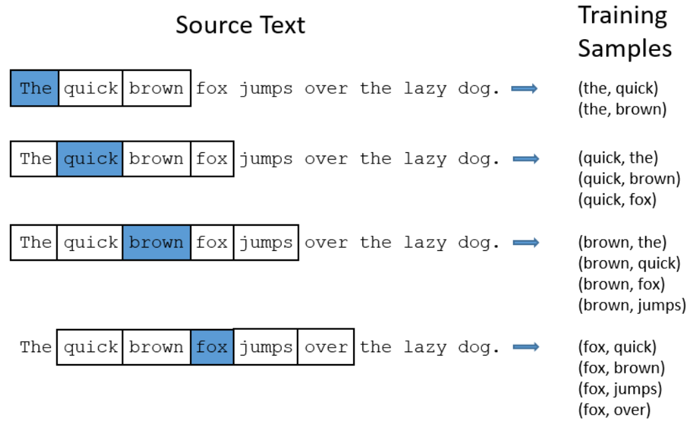
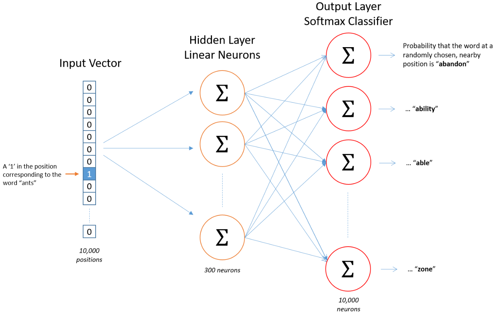
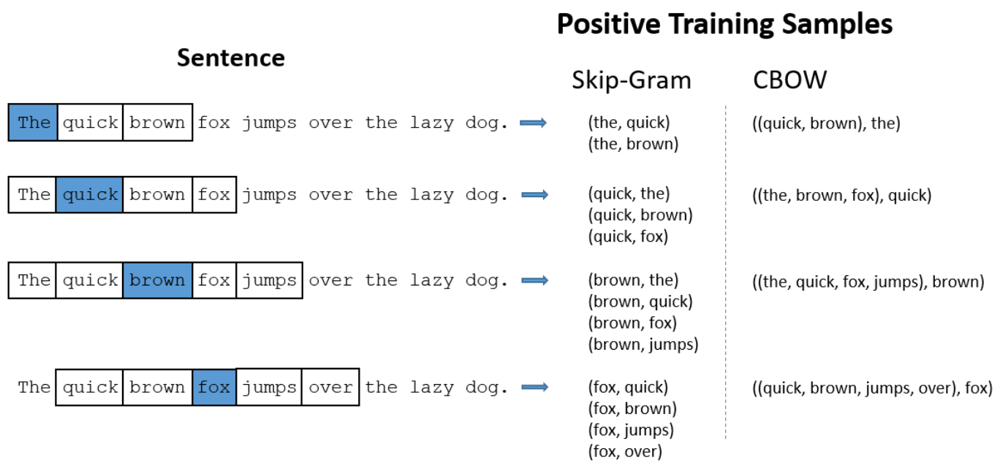
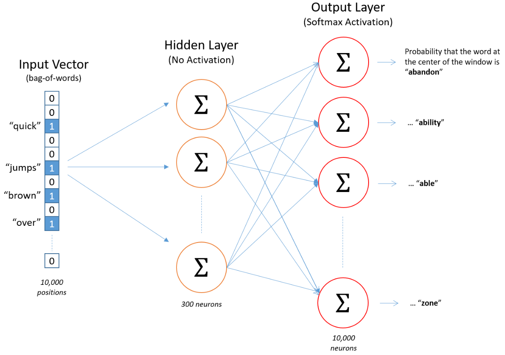

16 Understanding Word Embeddings and word2vec
16.1 Sources
This appendix relies very heavily on exceptionally clear materials created by Chris McCormick and shared openly.
I also made use of a small ebook he has published.
You can also access the original code, training data and pre-trained embeddings (trained on about 100 billion words from Google News) directly from Google.
However, it is often much better to train your own embeddings with your text rather than using pre-trained embeddings. This is because the pre-trained embeddings are trained on a very large corpus of text (e.g., Google News) and may not be relevant to your specific domain. For example, if you are working with medical text, the pre-trained embeddings may not capture the meaning of medical terms as well as embeddings trained on a medical corpus.
16.2 Word embeddings
Could encode categorical variables as one-hot vectors (similar to dummy coding), but ..
- This is a very high dimensional representation of the data. The vector has as many dimensions as there are words in the vocabulary.
- This is a sparse representation of the data. Only one value is coded 1 and all other values are 0.
- The vectors do not encode meaning, only identity. In other words, there is no relationship between vectors for words that share meaning (e.g., depressed and sad, couch and sofa)
Word embeddings are also vectors where these is a single vector representation for each word. But..
- The can have lower dimensionality (e.g., 100, 200, 300 values to encode a word)
- These are not sparse (not mostly 0s)
- Vectors for related words are close to each other in the vector space
16.3 The Word2Vec Architecture
Word2Vec is a method for creating word embeddings. It uses a neural network to learn the vector representations of words based on their context in a large corpus of text.
There are two main architectures for Word2Vec:
- skip-gram: Predicts the context words given a target word.
- continuous bag of words (CBOW): Predicts the target word given its context words.
We will focus on the skip-gram architecture, which is a bit more intuitively understandable. But what we learn is very easily generalized to CBOW.
16.4 Skip-gram
16.4.1 The Fake Task: Predicting Context Words
Word2Vec in general, and the skip-gram architecture in particular, use a neural network set up to perform a “fake” task to learn the vector representations of words.
- The fake task is to predict the context (i.e, surrounding) words given a target word.
- The neural network is trained on a large corpus of text to perform this task but after we train the model, we never use it for this task. Instead, we are just interested in the weights of the trained model. The weights of the network become our word embeddings (the vectors used to represent each word).
- We have seen this “fake” task approach before in the context of autoencoders. In that instances we used the raw data to predict the raw data but clearly we didnt need the model make those predictions. Instead, we wanted the weights in the compressed hidden layer to reduce the dimensionality of the data
16.4.2 Generating Training Examples
To train a model to predict the context words given a target word, we need to define the context. The context is defined by a window of words around the target word. For example, if we have the sentence “The quick brown fox jumps over the lazy dog” and we set the window size to 2, the context for the word “fox” would be [“quick”, “brown”, “jumps”, “over”].
We move this window over a full corpus of text (e.g., all the text in Wikipedia) to create a very large number of training samples. Each training sample is a pair of words where the first word is the target. This will be the input to our model for that sample. The second word is a context word and this will be the label for that sample. The figure below shows how we could generate training samples for this sentence using a window size of 2. The blue words represent targets for which we will eventually learn embeddings.

16.4.3 The Neural Network Architecture for Skip-gram
The neural network architecture for skip-gram is a simple feed-forward neural network with one hidden layer.
- The input layer has as many nodes as there are words in the vocabulary (in the figure below, the vocabulary size is V = 10,000).
- The output layer also has as many nodes as there are words in the vocabulary.
- The hidden layer has a smaller number of nodes (e.g., 100, 200, 300). The weights between the input and hidden layers are the word embeddings we are trying to learn. For example, in the figure below, each word in the vocabulary is represented by a D = 300 dimensional vector.

This model is trained using the word pairs described above.
- The target (first) word in the pair is represented using a 10,000 value one-hot vector as an input. The figure below displays the word “ants” as a input for that sample.
- The context (second) word in the pair is also represented using a 10,000 value one-hot vector as the label/output layer.
- The model learns to assign probabilities to each of the 10,000 context words given any specific target word as input. But we don’t care about those predicted probabilities. Instead, we just care about the V x D matrix of weights associated with the hidden layer.
- Each row of this matrix is a D dimensional vector that represents the word embedding for a specific word in the vocabulary. For example, the 8th row in that matrix in the figure below will contain 300 weights associated with the word “ants”. Those 300 weights are the vector representation for “ants”.
So why does this assign similar vectors to similar words.
- Given that the input vector is a one-hot vector, the probabilities in the output layer are a function of only the row in the D X V matrix associated with the input word. In other words, when the hD X V matrix is multiplied by this one hot vector, it sets the output associated with all the other rows in the matrix to 0. The only row that is not set to 0 is the row associated with the input word. This means that the output layer is only a function of the weights (i.e., the embeddings) associated with the input word.
- Now if two target words are similar, they will have similar context words. For example, “intelligent” and “smart” are likely surrounded by similar words. Dog and cat are likely also surrounded by similar words to each other.
- The model will need to learn similar weights for two target words so that they will assign similar probabilities to the context words that surround them. This means the embeddings (which are just these hidden layer weights) will have to be similar for both target words since only that row is used to predict the probability of the context words. Super cool! What a great fake task!!
16.5 Advanced Details for Skip-gram
With a vocabulary of 10,000 words and a 300-demensional embedding, the D x V matrix has 3 million weights. This is a lot of weights to learn. This could be very computationally expensive to train and would required a VERY large number of training examples. And of course, with a very large number of training examples, the training process will be very slow.
To speed up the training process, the creators of skip-gram made two adjustments to the training process.
- The adjusted how common words were handled to reduce the size of the training set
- They modified the learning algorithm to use negative sampling such that only a small percentage of the weights are adjusted for each training example.
16.5.1 Common words
There are two problems with commons words like “the”
- Word pairs like (“fox”, “the”) don’t tell us much about the meaning of fox
- We will have many more samples where the target word is “the” than we need to learn embeddings for the word “the”
Skip-gram uses a technique called subsampling to reduce the number of training examples that contain common words.
- The idea is to randomly remove some of the training examples that contain common words. This is done by assigning a probability to each word in the vocabulary based on its frequency in the corpus.
- Words are then selected to be removed based on this probability.
- In practice, very few unique words are actually removed. For example, using Wikipedia as the corpus, only the top 27 words would be downsampled. Nonethless, downsampling these words does reduce the size of the training set because these 27 words represented 33% of all the words (by count) in Wikipedia!
16.5.2 Negative Sampling
The second issue with training the skip-gram model is adjusting the full set of weights after each training example can also be computationally expensive given their number.
- The creators of skip-gram used a technique called negative sampling to reduce the number of weights that are adjusted for each training example.
- Negative sampling addresses this by only modifying a small number of weights for each training example. Specifcally, for each training example, the weights for the label unit (i.e, the second entry in the training pair) and a small number of randomly selected negative unit (i.e., words that are not the current context word). This speeds up the process of training the model and reduces the number of weights that need to be adjusted.
16.5.3 Context Position Weighting
One additional modification to the skip-gram architecture is to weight the context words based on their position relative to the target word. For example, the word “quick” is closer to “fox” than “over”. The creators of skip-gram used a weighting scheme that assigns higher weights to context words that are closer to the target word. This means that the model will learn more about the meaning of the target word from context words that are closer to it.
It does this by randomly reducing the window size for each training example. For example, if the window size is 5, the model will randomly select a window size of somewhere between 1-5 for each target word as training sample pairs are being created from the corpus. This reduces the number of training pairs for contexts at the outer edges of the window and over-represents context words nearer to the target word.
16.6 Continuous Bag of Words (CBOW)
CBOW is the second architecture for Word2Vec. It is similar to skip-gram but instead of predicting the context words given a target word, it predicts the target word given the context words. Given this, the inputs are now the context words and the label is now the target word. This yields training data and an architecture that is somewhat different.
Here is a comparison of the training samples for the same sentence using skip-gram and CBOW with a window size of 2.

The architecture for CBOW is similar to skip-gram but the input vector now has 1s for all the words in the context and 0s for all the other words. The output vector is a one-hot vector for the target word.

But the same principles apply. The model will learn similar weights for similar context words so that they will assign similar probabilities to the target word. This means the embeddings (which are just these hidden layer weights) will have to be similar for all context words that are similar to each other and associated with a particular target.
16.7 Learning Embeddings for your text
Although you can use pre-trained word embeddings, it is recommended that you derive embeddings specific to your text. This is because the pre-trained embeddings are trained on a very large corpus of text (e.g., Google News) and may not be relevant to your specific domain. For example, if you are working with medical text, the pre-trained embeddings may not capture the meaning of medical terms as well as embeddings trained on a medical corpus.
You can do this in R using the word2vec package. Here is an online tutorial training both skip-gram and CBOW embeddings.